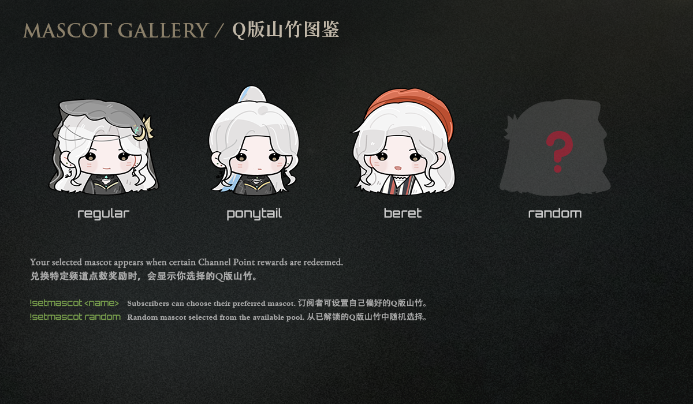

Your selected mascot appears when certain Channel Point rewards are redeemed.
兑换特定频道点数奖励时，会显示你选择的Q版山竹。
Subscribers can choose their preferred mascot.
订阅者可以选择自己喜欢的Q版山竹。

Choose Your Mascot / 选择Q版山竹
!setmascot <name>
Choose your preferred mascot /
选择你喜欢的Q版山竹
!setmascot random
Randomly choose from your available mascots /
从可用的Q版山竹中随机选择
Mascot selection is a subscriber feature.
The “Regular” mascot is available to non-subscribers too.
Q版山竹选择功能仅限订阅者使用；
非订阅用户也可以使用 “Regular” Q版山竹。
🌱 Channel Guide / 频道指南
Learn more about Channel Points, emotes, subscriber benefits, and other channel features.
查看频道点数、表情、订阅福利及其他频道功能。
View Channel Guide / 查看频道指南